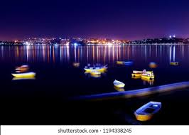
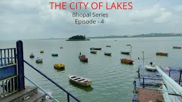

🌅Botting Point🌅
Bhopal: A Root Cause Analysis of the Deadliest Industrial Accident in History
I was an employee of Union Carbide Corp. (UCC), and like other
employees, I know exactly where I was when I first heard the news.
Analyzing the root cause of this horrible accident provides insight
and opportunities to learn from the mistakes that led to Bhopal.

In the 11th century, Raja Bhoj of Dhar founded a city on the shores of a
beautiful lake in central India. Today, that city, Bhopal, is a bustling
metropolis of 2 million people. The city and surrounding area is home to
a large wildlife refuge, a museum of Indian tribal life, a collection of
historical palaces and temples, and Stone Age cave paintings. Almost
anywhere else in the world, this city would be a major tourist
attraction, but Bhopal is well-known for something else: It is the site
of the deadliest industrial accident in history.
Geography

Bhopal has an average elevation of 500 metres (1,401 ft) and is located in the central part of India, just north of the upper limit of the Vindhya mountain ranges. Located on the Malwa plateau, it is higher than the north Indian plains and the land rises towards the Vindhya Range to the south. The city has uneven elevation and has small hills within its boundaries. The prominent hills in Bhopal are the Idgah, Arera and Shyamala hills in the northern region, together with the Katara hills in the southern region. There are 17 lakes and 5 reservoirs biggest of them are upper lake (Bada Talab) and lower lake.[45] The Upper Lake was built in the 11th century[46] and has a surface area of 36 km2 and catchment area of 361 km2 while the Lower Lake has a surface area of 1.29 km2 and catchment area of 9.6 km2.[47] Recently, Bhopal Municipal Corporation came with a resolution to involve local citizens in cleaning, conserving and maintaining the lakes.[48] Bhopal city is divided into two parts where one part which is near the VIP road and lake is Old Bhopal (north) and the other, New Bhopal (south), where malls are mainly situated. List of pin codes from Bhopal is 462001 to 462050 which comes under Bhopal postal division (Bhopal Region).[49]